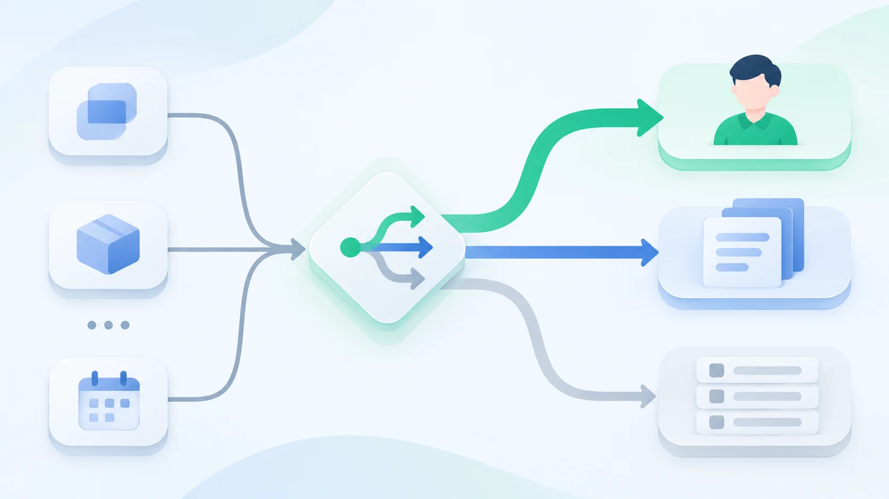

Article · 飞函
Article · 飞函
业务提醒进群，如何不淹没人工沟通
上午十点，项目群正在确认一个客户问题的处理方案。工单系统连续推送状态变更、超时预警和字段更新，几位同事的讨论被挤到屏幕上方。等真正需要人接手的提醒出现时，群里已经很难判断哪一条值得立即回应。
业务系统接入协同平台后，提醒能更快到达人。但如果每次数据变化都生成一条群消息，机器人就会占据原本用于判断、协调和决策的空间。治理的关键，是先决定什么事值得打断谁，再决定消息怎样发。
先按处置动作划分提醒
可以从接收者的下一步动作倒推消息等级，而不是直接沿用业务系统的事件名称：
- 必须立即处理：例如关键工单超过约定时限且尚无负责人。推送到明确的责任人或处置群，写清对象、影响、截止时间和处理入口。
- 需要关注，但不必立刻回复：例如工单即将到期。按负责人汇总，在合适的时间发送，避免每次字段变化都提醒一次。
- 只供查询：例如普通状态流转。保留在业务系统的记录中，供需要的人主动查看。
同一事件在不同阶段也可能改变等级。已经由负责人接手的工单，后续进展通常不必反复通知整个项目群；只有责任转移、处理受阻或风险升级时，才重新提醒相关人员。

给机器人设定发送边界
先列出业务系统准备推送的事件，再逐项确认接收范围、触发条件和去重规则。一个实用原则是：一条提醒对应一个需要完成的动作。短时间内连续发生的同类变化，可以合并为一条摘要；同一问题重复触发时，更新原有处理线索比不断追加新消息更便于跟进。
提醒内容也应尽量短：发生了什么、谁负责、何时需要处理、到哪里查看详情。完整日志留在业务系统，群消息提供足够的判断依据和入口即可。这样既减少刷屏，也避免把复杂业务记录拆成难以追踪的聊天片段。
让提醒回到人的协作流程
机器人负责提示事件，人工负责判断和协同。设计推送时，应同时约定谁确认接收、谁推进处理，以及无人响应时如何转交。群里一旦开始讨论，后续机器人消息应尽量围绕同一问题汇总，给人的提问、补充和决策留出连续的上下文。
飞函的即时通讯提供自定义机器人等能力，可作为外部应用提醒进入协同场景的入口。企业在规划接入时，仍需由业务系统和管理规则决定事件筛选、发送频率、接收对象与处置责任；不能把“能够推送”当成“应该推送”。对于重要的人工作业沟通，还可以结合重要消息、聊天分组等现有能力，帮助成员区分需要优先关注的内容。
上线后，定期查看重复提醒、无人响应的提醒和被人工反复追问的提醒。如果一类消息长期没人处理，就检查它是否真的需要进群；如果关键事件仍被漏看，就调整接收人、等级或表达方式。衡量接入效果，最终要看问题是否更快被正确的人接住，以及群聊是否仍能支持清晰的人工沟通。